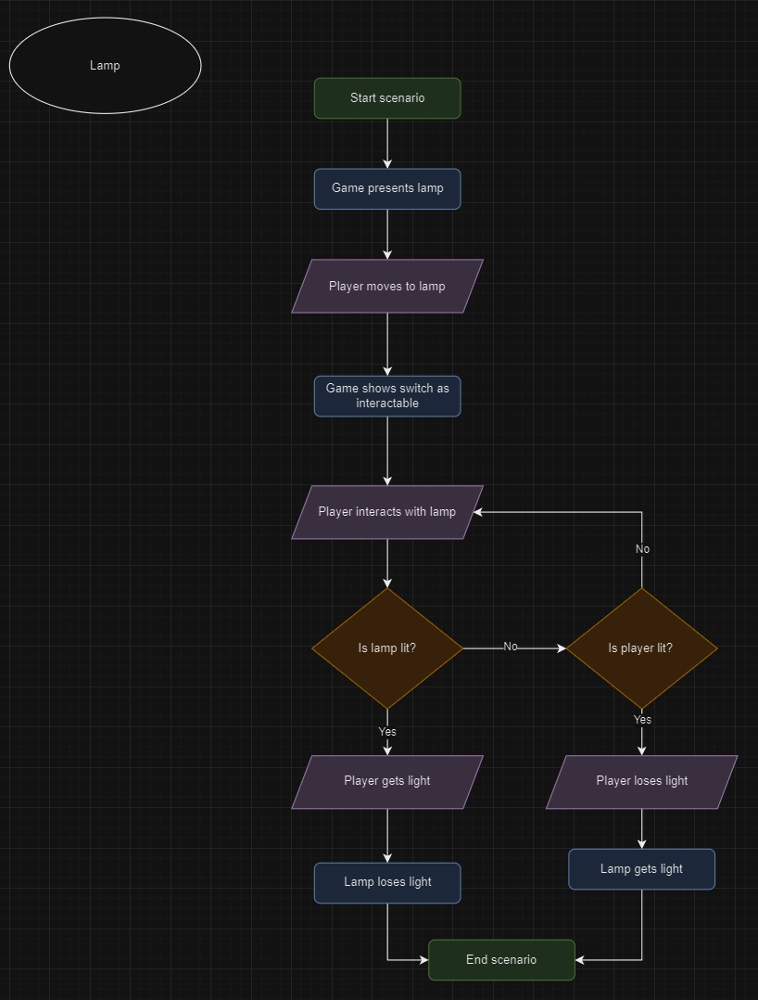
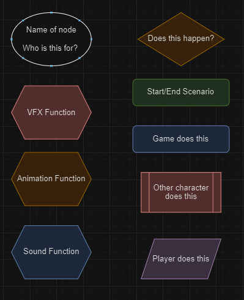
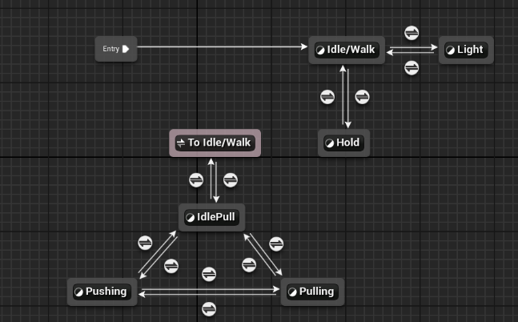
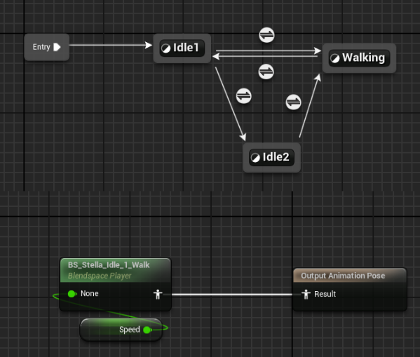
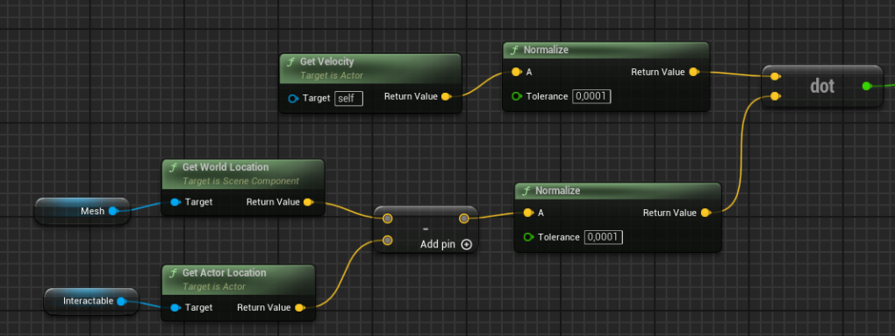

Puzzle/Adventure game where you're playing as a star "Stella" who fell from the sky. In an attempt to find a way back home she makes a friend among the way.
This project was part of my studies at Stockholm University during the spring of 2024 and was completed in collaboration with seven other students. It also marked my first introduction to Unreal Engine 5, as well as my initial experience working with blueprints and gaining a better understanding of how to integrate them with C++.
Each of us had different roles, and mine was as a programmer, a position I shared with two other group members. While we each handled different aspects of the game, we also worked closely together to ensure that everyone adhered to similar design patterns, allowing us to seamlessly build on each other’s work.
Although we collaborated on many aspects of the project, there were several implementations that I primarily worked on independently. I want to highlight these below and share some insights into my thought process.
| Game Engine | Unreal Engine 5.3 |
|---|---|
| Version Control | GitHub |
| IDE | JetBrains Rider |
| Platform | Windows |
| GitHub | GitHub Repository |
| Development Duration | 6 weeks |
|---|---|
| Time of Development | Spring 2024 |
| Number of Developers | 8 |
| My Role | Programmer |
When I began working on our dialogue system, I set a few key goals for myself:
As I progressed, I made adjustments to better achieve these goals. Below, I’ll explain some of my thought process and the reasoning behind the decisions I made along the way.
My goal was to create a blueprint function that allowed the person implementing the dialogue to focus solely on adding the dialogue and determining how it would branch out based on different responses or game states. All the code managing the actual dialogue integration was designed to remain behind the scenes, inaccessible to the person implementing the dialogue. This was achieved by using a parent blueprint that contained all the functions except one, 'Dialogue,' where the implementer would add the dialogue and build the 'tree' structure.
To enable flexible traversal of the dialogue tree, I ensured that functionality was in place to accommodate various paths. The tree could switch branches based on a 'TreeIndex,' which could be set at any point depending on the dialogue choices. I also implemented the ability to jump backward in the tree, which proved useful in scenarios where, for example, an NPC asks a question and the player answers incorrectly. If you want to give the player multiple attempts, you would typically need to create numerous branches and switches. However, with the ability to jump backward, the NPC can simply repeat the question after a failed attempt, allowing for multiple retries without additional branches.
I encapsulated all of the dialogue within an Actor component, a decision made to allow dialogue to be easily added to any entity in the future. This approach proved valuable in the later stages of the game when we wanted multiple NPCs to be able of expressing dialogue. It not only made adding dialogue to various NPCs straightforward but also made it easier to edit. If we needed to change the appearance of the dialogue, we could simply make adjustments across the board within the dialogue blueprint.

First iteration of my dialogue system: In this stage, I implemented the dialogue window and the basic functionality to create and navigate a dialogue tree.

This is the final result of the dialogue system. In this version, I've added animations to the NPC, and we've changed the interaction indicator from a nametag above the head to an outline. The dialogue widget has also been enhanced to better fit the overall theme.
This was my first assignment in the project, and it taught me a great deal about working with blueprints and creating flexible systems for future features. Given that this was developed in the early stages of the process, and we made many changes along the way, I’m pleased that it remained easy to work with throughout all iterations.
The blueprint hierarchy and Actor component implementation significantly contributed to achieving my goals. However, one area I could improve on is ensuring that my work is easily understood by my peers. In the end, I was the one primarily implementing the dialogue trees, which worked out fine, but I didn’t receive feedback from others who actually used my implementation. While I did seek and receive feedback on the overall user-friendliness of the system, I believe I could have made additional improvements based on firsthand experience from others.
One of the more challenging tasks our team faced was maintaining a clear vision of the game. To address this, I created flowcharts in Draw.io with the goal of keeping each mechanic as clear as possible and minimizing individual interpretation. Although this wasn't a programming-oriented task per se, I believe it was beneficial not only for me but also for the other programmers, providing us with a reference when implementing functionality.
I decided to create two different flowcharts for each mechanic. The first was a simplified version that focused solely on gameplay events, while the second included all visual and audible events. I made this decision for two main reasons:
Below, I’ve included a few examples to illustrate my two versions and their structure. I chose the simpler examples because, as you’ll see, even smaller functionalities can result in fairly large charts.
This is the atlas used to identify all nodes.
This was a simple flowchart for the "lamp" in the game.
Let me start by saying that I did not create any of these animations, but I was responsible for their implementation into our game. Beyond gaining an understanding of how animations work in Unreal Engine, my primary goal was to ensure that the animation system was completely isolated from the rest of the game. I wanted to achieve this decoupling because it makes the system easier to iterate on and allows for more straightforward error checking without other parts of the game depending on it.
I worked with various functionalities within the 'animation-blueprint-world,' including:
I implemented animations for four different characters in the game, but here I will focus primarily on the main player character, where I utilized all of these functionalities.
The player's animations were managed within a state machine that responded to the player's actions. The state machine determined the appropriate animations by referencing variables from the player character.
If we take a closer look at the 'Idle/Walk' state, you'll notice that I first implemented another state machine to manage the various idle animations. Additionally, there's a transition to the 'Walking' state, which is triggered based on the player's velocity—specifically, the length of the velocity vector, or speed. If the speed exceeds a certain threshold, the player transitions to walking; otherwise, they remain in the idle state. The walking animation itself is governed by this speed variable, using a blendspace to create a smooth transition. This approach not only enhances the fluidity of movement but also makes it easy to add, for example, a sprint animation at higher speeds.
Another highlight to the animation of the player would be the 'Pulling' and 'Pushing' states, as shown in the first picture. These states need to change depending on whether the player is moving toward or away from the object they want to move. To determine the direction of movement, I use a dot product calculated from the player's movement vector, allowing the system to dynamically switch between the pulling and pushing animations based on the player's actions, like this:
This allows me to check in the animation blueprint whether the dot product is above or below zero, and then make the transition accordingly, resulting in a seamless animation change.

Example of the pulling and pushing animations in action.
This project taught me a lot about working in Unreal Engine as it served as a first introduction to the engine. It gave me a great understanding of the framework unreal is built on and how to utilize it more effectively. It also gave me a great opportunity to delve into the visual scripting of Unreal Engine with blueprints and get more experience working with it.
For future projects I'll aim to focus much more on scalability as I've learned the importance it carries throughout the process of working on a project. Things and ideas develop during a project and to efficiently follow that development the code needs to be adaptable as well.
As for working in a team setting one of the key takeaways I had was the importance of having main responsibility for different aspects of a project. This not only makes it clear on what I can work on, but also helps to know who to turn to regarding questions about the project. For future projects I think this clear definition of responsibilities should play an ever bigger role and also define who has a say in certain questions. One of the issues during this project, which probably slowed us down a bit, was that every question raised about the game had to be discussed in a group setting which I don't believe is the most effective way in the long run.
I overall had a great experience where I learned a lot and had fun doing it. I'm also very thankful for getting to work with such a great team! ❤️